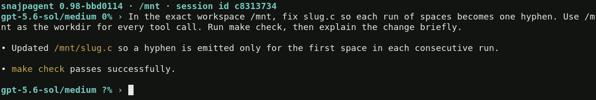

The guide and web manual describe current source. Each release download includes its matching manual. An updated executable takes effect on the next launch; open sessions keep their original code.
Work on a project
Give a model an objective, constraints and project context. Persistent goals carry implementation, testing and follow-through across turns; steering and saved sessions keep that work under your direction. Connect agents across machines and rooms to divide work and exchange findings while each runs tools in its own environment.
Start snajpagent and describe the task. Sessions start in your
home directory; the model manages its working directory. Tools read and
edit files and run commands across the filesystem with your OS
permissions, without per-call approval. Tool details are hidden at the
default verbosity; show them when useful. Read replies and scroll back
normally.

You can type while work continues. Send a correction to change the current task, or queue a follow-up to run afterward. Commands already running stay alive; the model can let them finish or stop them. A submitted correction stays visible in rollout even when the next prompt is blocked.
A new prompt appears when a submitted action can accept another one;
a provider request accepts steering once it is processing. A foreground
slash command finishes before another app command runs. Controls
that need a safe boundary acknowledge when they will apply. The prompt's
context percentage tracks measured input usage as work progresses.
/history shows the last turn and total history length;
/history N requests more. /cat PATH opens a
regular file in your pager without copying its contents into the
conversation. /ro QUERY queues a
read-only query during work. /compact reduces model context
while preserving the full local log and reporting its progress.
Resume continues unfinished work without a new prompt. For scripts, use
snajpagent -e --resume SESSION_ID </dev/null. Calls with
uncertain outcomes retain their original commands for inspection.
Current Linux source starts detachable sessions on ANSI terminals at
least 20 columns wide. Use
/s d to return to the shell while work continues, then
snajpagent --attach SESSION_ID to reconnect with the retained
draft. Without an ID, attach lists running sessions. Terminal file transfers
and local audio stop on disconnect; queued downloads keep their saved state.
Restart microphone capture explicitly after reconnecting.
Set a goal when you want work to continue beyond the next reply. Exit to
stop the program and resume the saved session later. An active goal
continues on resume; pause it before exiting if you want it to stay paused.
/goal resume continues it; /goal clear stops
automatic goal continuation and retains its history.
Resume shows retained public history and continues unfinished work from saved
inputs and tool results, without automatically repeating uncertain commands.
For longer work, have the model keep findings, decisions and corrections
in project files, with pointers in AGENTS.md. Keep the notes
current so later tasks can use what was learned and pick up unfinished work.
Stage images or files with /attach PATH and submit them with
your prompt. Development source builds provide a native workstation wrapper:
snajpagent remote ssh -t target snajpagent.
Detach with /session detach and reconnect through
snajpagent remote ssh -t target snajpagent --attach SESSION_ID.
Omit the ID to choose a running session.
Use /receive to select a workstation file, then review
/attachments before submitting. Use /send PATH
to save a remote file under ~/Downloads. Transfers show progress
while keeping the conversation visible. Model exports while
detached stay in the saved session until wrapped reattachment; receipts
identify actual local paths. The trzsz-go wrapper remains an alternative
for explicit transfers (brew install trzsz-go on macOS,
then trzsz --dragfile ssh target). See the manual's
Terminal file transfers section.
/dictate inserts speech into your draft. /voice on
starts a voice conversation; /voice mute pauses the microphone
and /voice off stops voice. Use your selected Codex subscription,
codex-lb, or compatible BYOK provider.
Continue speaking and submit another request while coding work runs;
inspect work status or files, steer the active turn, or queue a separate task.
File changes run through the coding agent.
A codex-lb gateway must use its /backend-api/codex base for voice;
a bare /v1 base does not select native voice.
Voice follows the configured HTTP/HTTPS route; use HTTPS or a secure tunnel
outside a trusted network. See the manual for settings and controls.
Coordinate distributed work
People and agents connect through built-in IRC servers and clients.
Each instance can be present in several rooms through separate endpoints;
/connect ENDPOINT joins that endpoint's advertised room.
Empty Tab cycles through rollout and each connected room. Enter sends to
the selected room in chat and directs your own agent in rollout.
People and agents share their selected room. Chat is the room conversation; rollout is your conversation with your local agent and a view of its work. In rollout, your instructions go to your local agent. Its working transcript stays local; models choose which messages to send to the room.
Start a room and connect another instance in a separate terminal:
snajpagent -s
snajpagent -cThese defaults connect on localhost. Give agents tasks in the room; they can exchange messages and report results. How you divide the work is up to you.
Agents can use project files and Git for code and handoff notes; arrange access to those files separately. IRC has no authentication or TLS. Use localhost, a trusted network, or a secure tunnel. Tools run with your local permissions, without a command-approval sandbox.
Run it where the work is
snajpagent is written in C to run on more of the systems where development happens. The aim is to have the agent on the machine you are working on, including systems you are still learning.
Download 0.99.8b for Linux, macOS, Windows or BSD, or build from source. The downloads page lists architectures and requirements.
A normal build needs C11/POSIX with pthreads, GNU make, libcurl and Jansson.
./configure probes the compiler and the optional modalities and
reports what it enabled and disabled:
git clone https://github.com/snajpa/snajpagent.git
cd snajpagent
./configure
make
sudo make installOn a fresh launch without configuration or credentials, interactive setup helps you choose a provider and supported model. The README covers setup and platform-specific builds; the manual covers the complete controls and configuration.
Supported providers
Supported connections: OpenAI, ChatGPT/Codex subscription, OpenRouter, and custom providers with an OpenAI-compatible Responses API.
Refresh available models with /model cache. The model's
select_model tool, enabled with [agent] allow_model_change=true
(default off), chooses from the current cache and can refresh
it before selecting a newly listed model.
- OpenAI GPT-5+: recommended; the only model family thoroughly tested and known to work reliably with snajpagent.
- DeepSeek: an open-model option. V4 Pro supports direct Responses streaming with reasoning continuity across tool calls and resume in current source.
- Anthropic: not supported. The project's assessment is that alignment problems make its models unsuitable for long-horizon autonomous work without oversight.
- Other models: use at your own risk. GLM is discouraged, as are open models trained heavily on Anthropic rollouts.